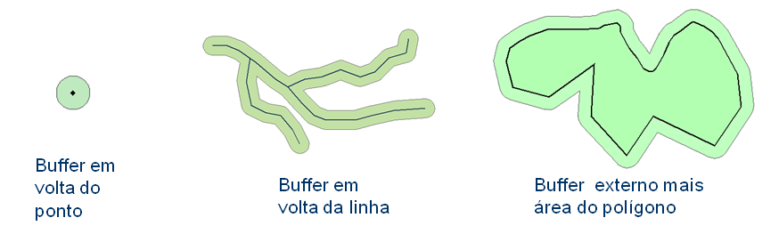

Utilitários para operadores
Antes de apresentar os operadores espaciais propriamente dito, veja a seguir o conjunto de utilitários que podem ser utilizados junto com os operadores.
Unidade de distância (Distance units)
Os operadores que utilizam unidades de distância devem usar as letras entre aspas duplas (“<unidade>”). As seguintes opções estão disponíveis:
- “cm”: centímetros
- “m” : metros
- “km”: quilômetros
Exemplo de uso no operador “buffer”:
buffer1 = Buffer(BufferType.Out_union, 50, "cm")
buffer2 = Buffer(BufferType.Level, 400, "m", 200, "m")
buffer3 = Buffer(BufferType.In_out, 200, "km", 200, "km")
Unidade de tempo (Time units)
Os operadores que utilizam unidades de tempo devem usar a unidade imediatamente após o valor numérico, ambos entre aspas duplas ( “<num><unidade>” ). As seguintes opções estão disponíveis:
- s: Second – tempo em segundos a partir da data/hora atual.
- min: Minute – tempo em minutos a partir da data/hora atual.
- h: Hour – tempo em horas a partir da data/hora atual.
- d: Day – tempo em dias a partir da data/hora atual.
- d+: Day (Extended) – tempo em dias a partir da data/hora atual até a zero horas do número de dias informado.
- w: Week – tempo em semanas a partir da data/hora atual.
- w+: Week (Extended) – tempo em semanas a partir da hora atual até a zero horas do número de semanas informado.
A Figura 3.11 mostra a diferença ao utilizar o utilitário de unidade de tempo “d” e “d+” em dois horários diferentes, as 7 e as 11 horas da manhã. Supondo que estes utilitários fossem aplicados dois operadores históricos que olham para o passado a partir das 7 horas da manhã, note que a quantidade de horas retornada por cada utilitário é diferente. No utilitário “1d” sempre retorna 24 horas de tempo passado. Já o utilitário “1d+” retorna um tempo maior de 31 horas de tempo passado, pois considera o intervalo de tempo da 0 hora do dia anterior até a hora atual.
Figura 3.11 – Exemplo do uso de diferentes unidades de tempo “d” e “d+”.
Na mesma Figura 3.11 supondo que estes utilitários fossem utilizados em dois operadores históricos a partir das 11 horas da manhã, o intervalo de horas é diferente para ambos utilitários. O utilitário “1d” retorna o mesmo intervalo de 24 horas de tempo passado da situação anterior (referência das 7 horas da manhã). Já o utilitário “1d+” retorna um intervalo de tempo maior de 35 horas de tempo passado, comparado a situação anterior (referência das 7 horas da manhã).
Estes utilitários de tempo podem ser utilizados para operadores históricos (análise do tempo no passado) ou para operadores de previsão (análise do tempo no futuro) a partir da data/hora atual.
Exemplo de uso em alguns operadores que fazem uso da unidade de tempo:
x1 = occurrence.zonal.count("ocorrencias", "120s", buf1, "UF = 'AM'")
x2 = occurrence.zonal.interval.max("focos", "30min", "10min", "Intensidade", buf1)
x3 = dcp.zonal.history.min("Serra do Mar", "Pluvio", "48h", ids)
x4 = grid.zonal.forecast.median("ETA15km", "3d+", buffer_mun)
x5 = grid.zonal.history.accum.min("hidro", "1w", 0, buffer_reg)
x5 = grid.zonal.history.mean("hidro", "5w+")
Utilitário de “Buffer”
Todas as análises que trabalham com objetos monitorados, isto é, um mapa vetorial com geometrias de pontos, linhas ou polígonos, pode-se optar por utilizar o utilitário “buffer” para definir áreas com equidistâncias dessas geometrias. A área definida pelo “buffer” será sobreposta aos dados dinâmicos, fazendo uso dos operadores zonais. Os tipos de “buffer” disponíveis são:
- Buffer( ) : Sem buffer. Será considerada a própria geometria do ponto, linha ou área do polígono (Figura 3.12).
Figura 3.12 – Sem “buffer” no ponto, linha e área do polígono
Exemplo sem buffer:
b1 = Buffer( ) ou
b1 = Buffer(BufferType.None)
NOTA: Operadores onde o “buffer” não é um parâmetro obrigatório e sendo este o último parâmetro no operador, basta omitir tal parâmetro para não utilizar “buffer”. No exemplo abaixo, as variáveis x1, x2 e x3 produzirão o mesmo resultado com o operador “grid.zonal.mean”, pois ambos não utilizam “buffer”. Na variável x3 ainda é possível omitir o valor 0 considerado padrão para a primeira banda/camada de um dado matricial.
b1 = Buffer( )
x1 = grid.zonal.mean(“Chuva”, 0, b1)
ou
x2 = grid.zonal.mean(“Chuva”, 0)
ou ainda
x3 = grid.zonal.mean(“Chuva”)
- BufferType.Out : Somente a área do buffer externo. Será considerada somente área do “buffer” externa à geometria do ponto, linha e limite do polígono (Figura 3.13).
Figura 3.13 – “Buffer” externo ao ponto, linha e limite do polígono
Exemplo do buffer externo:
b1 = Buffer(BufferType.Out, 200, “m")
- BufferType.In : Somente a área do buffer interno. Será considerada somente área do “buffer” interno à geometria do polígono (Figura 3.14). Para geometrias de ponto e linha considera-se ausência de “buffer”.
Figura 3.14 – “Buffer” interno ao ponto, linha e limite do polígono
Exemplo do buffer interno:
b1 = Buffer(BufferType.In, 200, “m")
- Buffer.Type.In_out : Área total do “buffer” interno e externo. Será considerada a união das áreas interna e externa do “buffer” para a geometria de ponto, linha e limite do polígono (Figura 3.15). Para geometrias de ponto e linha considera-se apenas o “buffer” externo.
Figura 3.15 – “Buffer” interno e externo ao ponto, linha e limite do polígono
Exemplo do buffer interno externo:
b1 = Buffer(BufferType.In_out, 200, "m", 200, "m")
- Buffer.Type.Out_union : Área do “buffer” externo mais área da geometria. Será considerada a união da área do “buffer” externo mais toda área da geometria quando polígono (Figura 3.16). Para geometrias de ponto e linha considera-se apenas o “buffer” externo.

Figura 3.16– “Buffer” externo somada a área da geometria de ponto, linha e limite do polígono
Exemplo do buffer interno externo:
b1 = Buffer(BufferType.Out_union, 200, "m")
- Buffer.Type.In_diff : Área da geometria menos a área do buffer interno. Será considerada a área da geometria menos a área do buffer interno quando polígono (Figura 3.17). Para geometrias de ponto e linha considera-se ausência de “buffer”.
Figura 3.17 – Área da geometria menos “buffer” interno da geometria de ponto, linha e limite do polígono
Exemplo da diferença do buffer interno:
b1 = Buffer(BufferType.In_diff, 200, "m")
- Buffer.Type.Level : Área diferença entre dois buffers externos. Será considerada a diferença entre um buffer maior menos o menor, definindo uma área não adjacente a geometria utilizada (Figura 3.18). O primeiro valor do buffer deve ser obrigatoriamente o mais distante.

Figura 3.18 – Diferença entre dois “buffer” externos da geometria de ponto, linha e limite do polígono
Exemplo de níveis do buffer externo:
b1 = Buffer(BufferType.Level, 10, "km", 5, "km")
Utilitários “Get Value”
Utilitário para acesso aos atributos de um objeto monitorado. Válido para atributos numéricos ou alfanuméricos.
Sintaxe:
get_value("<attribute_name>")
Exemplo: var1 = get_value(“vulnerabildade")
NOTA: Na interface de edição do modelo de análise há um atalho para os atributos do objeto monitorado . Ao escolher o atributo, o utilitário “get_value” será inserido automaticamente.
Utilitários “Add Value”
Utilitário para adicionar o valor de uma variável a um atributo na tabela resultante de uma análise baseada em objeto monitorado ou de PCD. Válido para atributos numéricos ou alfanuméricos. É obrigatório pelo menos uma vez o uso desse operador. Se nenhuma condição for atribuída ao utilitário, todos os objetos monitorados receberão um valor mesmo que este seja nulo. Para evitar o armazenamento de valores nulos ou que não tenham significado prático para um alerta, utilize o comando condicional (if) para restringir quais objetos receberão os resultados desse utilitário. A Figura 3.19 mostra como ficará a visualização de um mapa de municípios de São Paulo sem restrição, onde todos municípios são apresentados com uma cor, e com restrição, onde somente parte dos municípios serão apresentados.
Sintaxe:
add_value("<attribute_name>", <value>)
Exemplo: var1 = 10
add_value(“vulnerabildade", var1) # sem restrição
if var1 > 0:
add_value(“vulnerabildade", var1) # com restrição
(a) (b)
Figura 3.19 – Exemplo da visualização de duas análises, sem (a) e com (b) restrição no uso do utilitário “add_value”.
Utilitários “Get analysis date”
Utilitário que retorna a data/hora (datetime) de execução da análise, seja de uma análise em tempo real com valor de data/hora atual ou de um reprocessamento de dado histórico com data/hora no passado:
Sintaxe:
get_analysis_date()
Exemplo: var1 = get_analysis_date()
Nesse exemplo a variável var1 recebe o conteúdo de data/hora com “time zone” no formato “2018-06-15T23:11:11.876Z”. Para extrair parte do conteúdo de um “datetime” na forma numérica referente a data/hora de execução de uma análise, parâmetros como “year, month, day, hour, minute, second e microsecond” podem ser utilizados como nos exemplos a seguir.
Exemplos:
var2 = add_analysis_date().year : retorna o valor do ano entre 1 e ano atual.
var3 = add_analysis_date().month : retorna o valor do mês entre 1 e 12.
var4 = add_analysis_date().day : retorna o valor do dia entre 1 e 31 dependendo no mês e do ano.
var5 = add_analysis_date().hour : retorna o valor da hora entre 0 e 23.
var6 = add_analysis_date().minute : retorna o valor do minuto entre 0 e 59.
var7 = add_analysis_date().second : retorna o valor do segundo entre 0 e 59.
var8 = add_analysis_date().microsecond : retorna o valor da micro-segundo entre 1 e 1000000.
Para extrair parte do conteúdo de um “datetime” na forma numérica referente a data/hora do sistema operacional, independente do horário de execução da análise, utilize “datetime” do Python com os mesmos parâmetros como “year, month, day, hour, minute, second e microsecond”, como no exemplo a seguir, acrescido do parâmetro “today()” ou “now()”.
Exemplos:
var9 = datetime.date.today().year : retorna o valor do ano entre 1 e ano atual.
var10 = datetime.datetime.now().month : retorna o valor do mês entre 1 e 12.
Outra opção que pode ser utilizada á a função “strftime()” que retorna um “string” referente a data/hora do sistema operacional. Os exemplos a seguir mostram as opções de parâmetros para esta função.
Exemplos:
import time : necessário para usar a função “strftime()”.
var11 = time.strftime("%Y") : retorna o “string” do ano entre 0001 e ano atual.
var12 = time.strftime("%m") : retorna o “string” do mês entre 01 e 12.
var13 = time.strftime("%d") : retorna o “string” do dia entre 01 e 31 dependendo no mês e do ano.
var14 = time.strftime("%H") : retorna o “string” da hora entre 00 e 23.
var15 = time.strftime("%M") : retorna o “string” do minuto entre 00 e 59.
var16 = time.strftime("%S") : retorna o “string” do segundo entre 00 e 59.
Funções estatísticas para agregação
Para agregação de valores será útil fazer uso das funções de estatística, tais como:
- Statistic.min: valor mínimo de uma lista de valores
- Statistic.max: valor máximo de uma lista de valores
- Statistic.mean: valor médio de uma lista de valores
- Statistic.sum: soma de uma lista de valores
- Statistic.mean: média de uma lista de valores
- Statistic.standard_deviation: desvio padrão de uma lista de valores